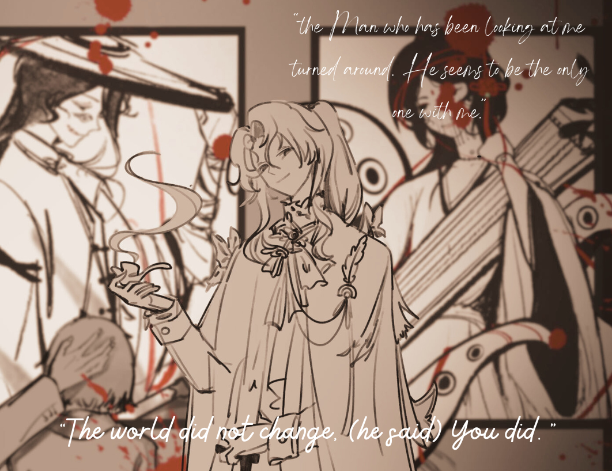
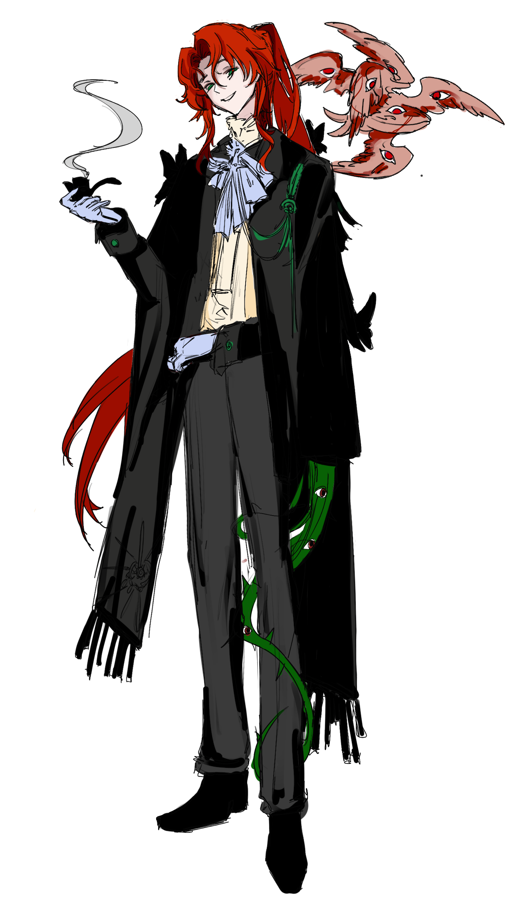
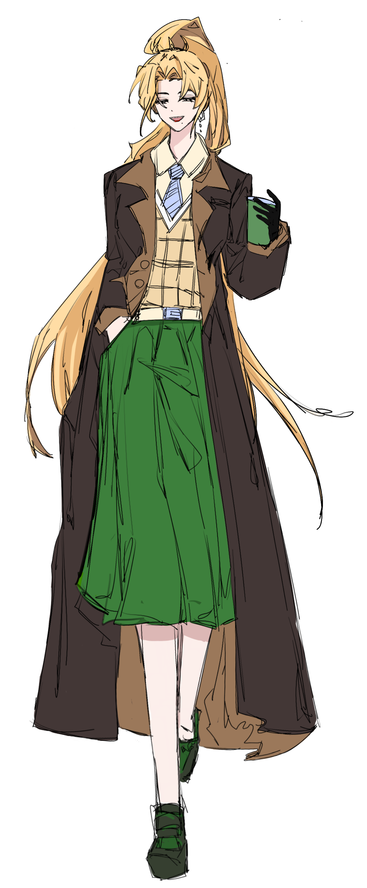
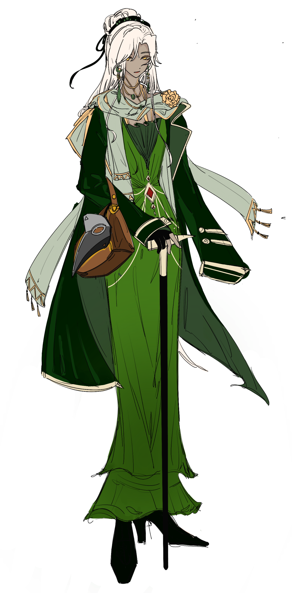
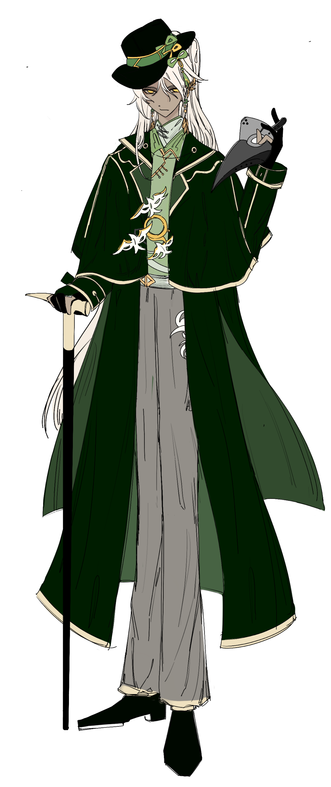
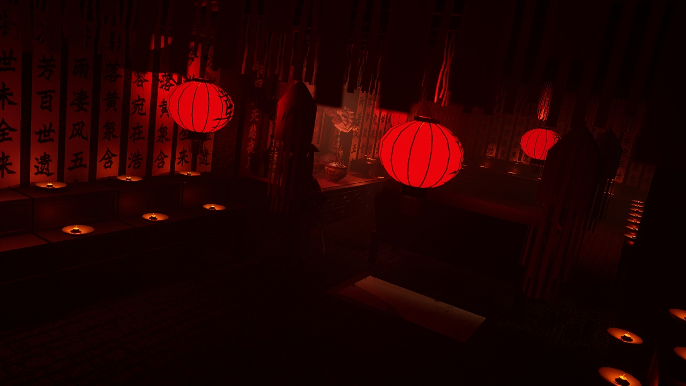
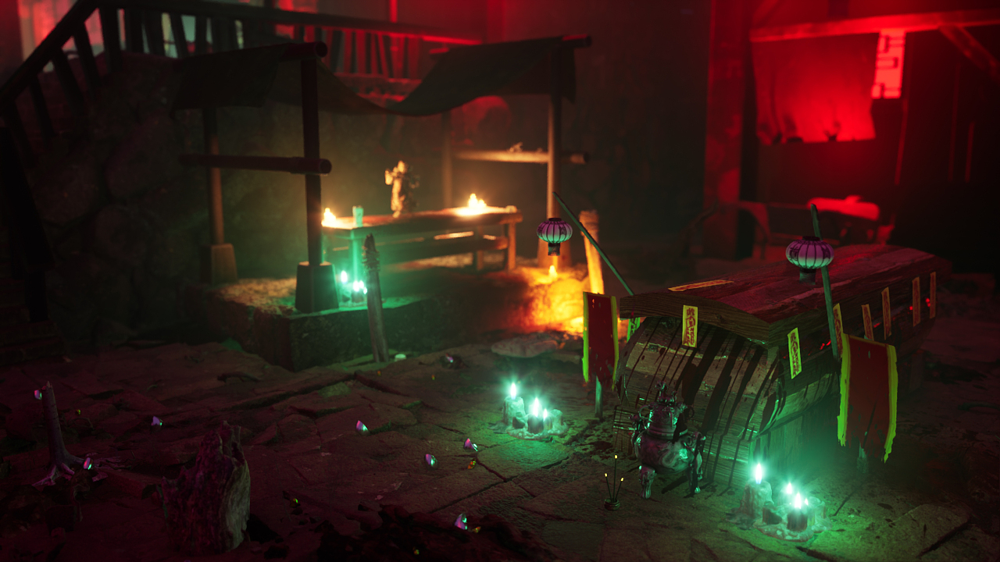
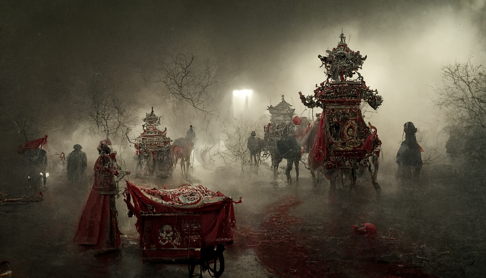
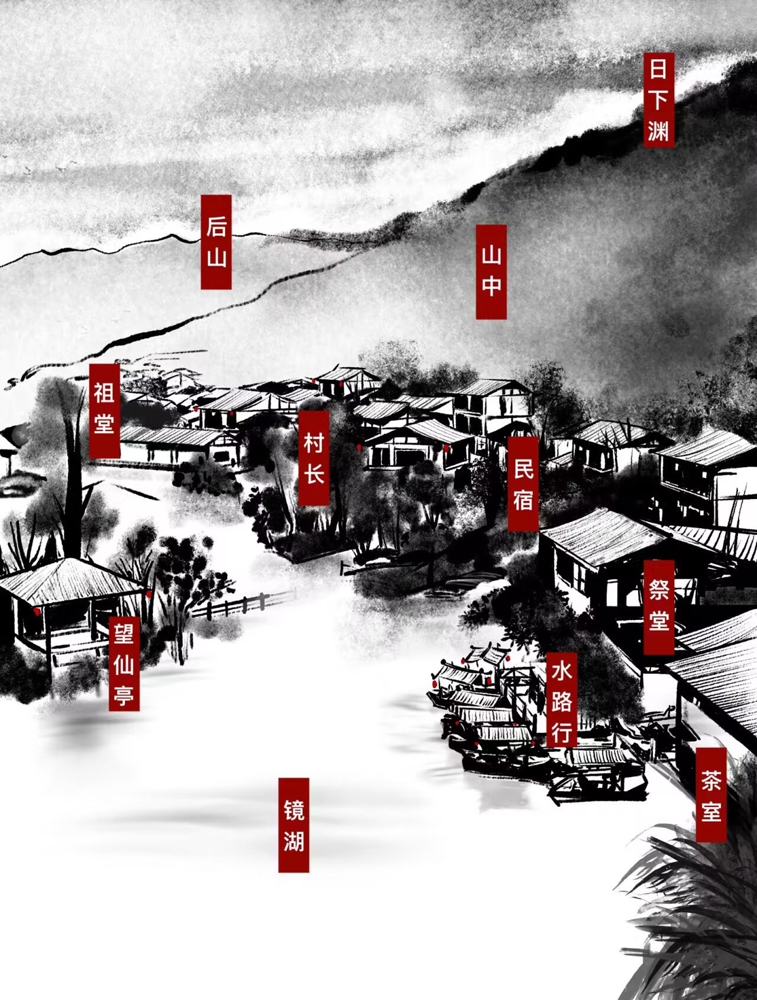

Cultural Horror
- Ritual practices, ghost beliefs, funerary customs, and folk magic shape events
- Folklore stays the foundation; cosmic dread escalates as a layer, not a replacement
A narrative RPG concept blending ancient Chinese folklore with Western cosmic horror
Players step into the role of Western scholars entering a mysterious version of ancient China - uncovering spirits, curses, rituals, and forbidden forces through choices, relationships, and collectible story cards.

Wonder Tales is a narrative-driven RPG concept that combines Chinese folklore traditions with Western cosmic horror. Players take the role of Western scholars entering a mysterious version of ancient China, where spirits, curses, and ritual practices hide something far older beneath the surface.
Through narrative choices, relationship changes, and collectible story cards, players gradually uncover secrets hidden inside a world that first looks peaceful - until its rules begin to fracture.
This page records not only what the game is, but also how the concept changed over time: the first version, what failed in paper prototype playtests, why I changed direction, and what still needs to be solved.
A solo-friendly narrative RPG built around a loop of choice → relationships → story cards → new scenes → journal updates, where the outsider perspective makes cultural discovery readable - and cosmic horror escalates without replacing the folklore foundation.
There are four playable characters, each starting in a different map. While they share similar traits, they exist in what feels like parallel worlds. Choosing a character determines which storyline you follow.




I want a game that is narrative-driven, full of meaningful choices, rich in character and relationship-building, and built around a card system that adds emotional and strategic depth.
At this stage, I did not start from visuals first. I started from production reality and my own strengths: if I have to build this mostly alone, the game loop must be writing-heavy, choice-driven, and systems-light enough to ship.
I want a haunting journey through ancient China, blending fear, the supernatural, and stories about love, betrayal, and friendship. Cultural traditions and philosophical ideas should shape gameplay and make it emotionally and intellectually engaging.
Collected images and concept art to define an eerie, mystical, and ancient visual tone.




Goal: Test narrative engagement, player choice, and mechanics through a mini TRPG campaign.
This was a paper prototype phase, not a content showcase. I mainly used it to test if players could understand the world quickly, role-play naturally, and stay engaged in branching scenes without heavy onboarding.
In short, the final direction keeps the Chinese core as the world foundation, uses the outsider perspective as the narrative bridge, and uses Western cosmic horror as pressure and escalation - not as the center.
This day I filed the necessary papers for my graduation from Miskatonic University.
The matter has been approved.
In this profession, to graduate is seldom a simple distinction; more often it is merely proof that one has survived what so many others did not.
When I informed my advisor of my intention to depart for China, he regarded me with an expression I found difficult to interpret—part approval, and part something darker which I could not readily name. He had always possessed a certain fondness for the unexplored corners of the world.
China, as it stands, has remained closed since the year of '57. Forty-one years of silence.
By all official accounts, it is the one place upon this earth where nothing extraordinary occurs.
That fact alone ought to have given me pause.
As I stepped into the carriage, he laid a firm hand upon my shoulder—so firm that it seemed less the gesture of a teacher dismissing a pupil than of a man offering farewell to one who may not return.
“Luck,” he said.
At last I have made landfall in China, having approached by the water route.
The officials at the port were plainly unprepared for my arrival.
Thus, after forty-one years, the wall which has sealed this land from the outside world has received its first small fracture.
Should this journal ever fall into other hands—whenever or wherever that may be—know that by the time you read these words, you too will stand upon the threshold of the same depths into which I have now ventured.
For that reason, I confess I welcome the thought of company.
Luck.

.png)
.png)
.png)